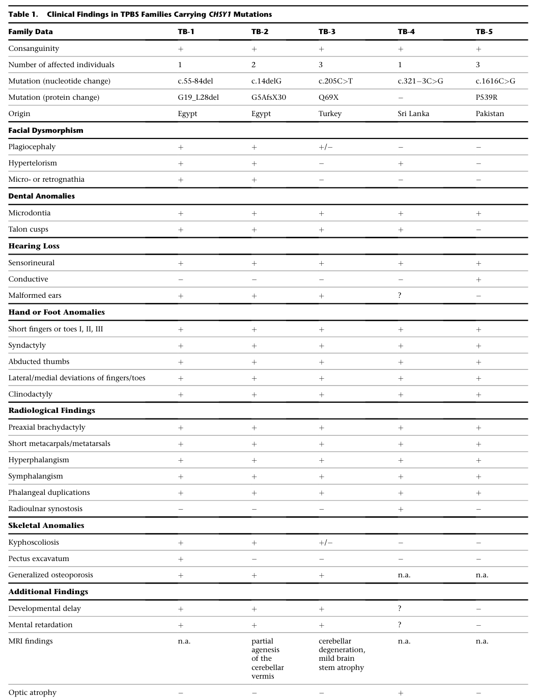

Temtamy Preaxial Brachydactyly Syndrome (TPBS) — Comprehensive Disease Characteristics Report
Executive summary
Temtamy preaxial brachydactyly syndrome (TPBS) is a rare, autosomal-recessive limb malformation syndrome caused by biallelic loss-of-function variants in CHSY1 (chondroitin sulfate synthase 1), a key enzyme in chondroitin sulfate glycosaminoglycan biosynthesis with additional evidence for dysregulation of BMP- and NOTCH-pathway outputs during development. Core features include bilateral, symmetric preaxial brachydactyly/hyperphalangism (digits 1–3), characteristic radiographic findings (phalangeal splitting/duplication, symphalangism, carpal/tarsal fusions, radioulnar synostosis), sensorineural hearing loss, craniofacial dysmorphism, and dental anomalies, with variable growth/developmental effects. (li2010temtamypreaxialbrachydactyly pages 2-4, li2010temtamypreaxialbrachydactyly pages 1-2, tian2010lossofchsy1 pages 1-2, sher2014anovelchsy1 pages 1-2)
Table (click to expand)
| Category | Details | Key sources (with PMID/DOI when present) |
|---|---|---|
| Disease identifiers | Temtamy preaxial brachydactyly syndrome (TPBS); Mendelian skeletal/limb-malformation syndrome. MONDO: MONDO_0011533. MIM/OMIM phenotype number: 605282. Open Targets links MONDO_0011533 to CHSY1 with biallelic loss-of-function evidence and Orphanet/gene2phenotype support. (OpenTargets Search: Temtamy preaxial brachydactyly syndrome, sher2014anovelchsy1 pages 1-2) | Open Targets MONDO_0011533 (OpenTargets Search: Temtamy preaxial brachydactyly syndrome); Sher 2014, Eur J Med Genet DOI: 10.1016/j.ejmg.2013.11.001 (sher2014anovelchsy1 pages 1-2) |
| Causal gene | CHSY1 (chondroitin sulfate synthase 1), gene MIM 608183; encodes an ~802-aa enzyme with glycosyltransferase activity involved in chondroitin sulfate (CS) biosynthesis. CHSY1 is the single high-confidence associated target in Open Targets for this disease. (li2010temtamypreaxialbrachydactyly pages 1-2, tian2010lossofchsy1 pages 1-2, OpenTargets Search: Temtamy preaxial brachydactyly syndrome) | Li 2010, Am J Hum Genet DOI: 10.1016/j.ajhg.2010.10.003; PMID: 21129727 (li2010temtamypreaxialbrachydactyly pages 1-2); Tian 2010, Am J Hum Genet DOI: 10.1016/j.ajhg.2010.11.005; PMID: 21129728 (tian2010lossofchsy1 pages 1-2) |
| Inheritance | Autosomal recessive / biallelic inheritance. Original reports identified affected individuals from consanguineous families and mapped the locus by homozygosity/linkage analysis to 15q26-qter. (li2010temtamypreaxialbrachydactyly pages 2-4, li2010temtamypreaxialbrachydactyly pages 1-2, tian2010lossofchsy1 pages 1-2, OpenTargets Search: Temtamy preaxial brachydactyly syndrome) | Li 2010 DOI: 10.1016/j.ajhg.2010.10.003; PMID: 21129727 (li2010temtamypreaxialbrachydactyly pages 2-4, li2010temtamypreaxialbrachydactyly pages 1-2); Tian 2010 DOI: 10.1016/j.ajhg.2010.11.005; PMID: 21129728 (tian2010lossofchsy1 pages 1-2) |
| Core phenotypes | Hallmark phenotype is bilateral, symmetric preaxial brachydactyly with hyperphalangism (especially digits 1–3). Common associated findings include facial dysmorphism, dental anomalies, sensorineural hearing loss, short stature/growth retardation, and in some reports developmental delay. (li2010temtamypreaxialbrachydactyly pages 2-4, li2010temtamypreaxialbrachydactyly pages 1-2, tian2010lossofchsy1 pages 1-2, sher2014anovelchsy1 pages 1-2, li2010temtamypreaxialbrachydactyly media e19ad15a) | Li 2010 DOI: 10.1016/j.ajhg.2010.10.003; PMID: 21129727 (li2010temtamypreaxialbrachydactyly pages 2-4, li2010temtamypreaxialbrachydactyly pages 1-2, li2010temtamypreaxialbrachydactyly media e19ad15a); Tian 2010 DOI: 10.1016/j.ajhg.2010.11.005; PMID: 21129728 (tian2010lossofchsy1 pages 1-2); Sher 2014 DOI: 10.1016/j.ejmg.2013.11.001 (sher2014anovelchsy1 pages 1-2) |
| Key radiographic findings | Radiographs show partial duplication/splitting of proximal phalanges in preaxial digits, hyper- and symphalangism, radio-ulnar synostosis, and carpal/tarsal fusions; Table/Figure summaries in Li 2010 depict characteristic hand/foot radiographs and mutation positions. (tian2010lossofchsy1 pages 9-10, li2010temtamypreaxialbrachydactyly pages 2-4, li2010temtamypreaxialbrachydactyly media e19ad15a) | Tian 2010 DOI: 10.1016/j.ajhg.2010.11.005; PMID: 21129728 (tian2010lossofchsy1 pages 9-10); Li 2010 DOI: 10.1016/j.ajhg.2010.10.003; PMID: 21129727 (li2010temtamypreaxialbrachydactyly pages 2-4, li2010temtamypreaxialbrachydactyly media e19ad15a) |
| Representative pathogenic variants: Li 2010 | Reported CHSY1 loss-of-function alleles included c.55_84del30 (p.Gly19_Leu28del), c.14delG (p.Gly5Alafs*29), c.205C>T (p.Gln69*), c.321-3C>G (splice-site), and c.1616C>G (p.Pro539Arg); variants segregated with disease and were absent in tested controls. (pawlik2010molecularmechanismsof pages 89-92, li2010temtamypreaxialbrachydactyly pages 2-4, li2010temtamypreaxialbrachydactyly pages 1-2, li2010temtamypreaxialbrachydactyly media e19ad15a) | Li 2010 DOI: 10.1016/j.ajhg.2010.10.003; PMID: 21129727 (li2010temtamypreaxialbrachydactyly pages 2-4, li2010temtamypreaxialbrachydactyly pages 1-2, li2010temtamypreaxialbrachydactyly media e19ad15a); Pawlik 2010 summary (pawlik2010molecularmechanismsof pages 89-92) |
| Representative pathogenic variants: Tian 2010 | Tian et al. independently identified truncating frameshift loss-of-function CHSY1 alleles in an autosomal-recessive syndromic brachydactyly family and linked CHSY1 deficiency to abnormal NOTCH signaling output. (tian2010lossofchsy1 pages 1-2, tian2010lossofchsy1 pages 9-10) | Tian 2010 DOI: 10.1016/j.ajhg.2010.11.005; PMID: 21129728 (tian2010lossofchsy1 pages 1-2, tian2010lossofchsy1 pages 9-10) |
| Representative pathogenic variants: Sher 2014 | Sher et al. reported a novel homozygous missense variant c.1897G>A (p.Asp633Asn / D633N) in a consanguineous Pakistani family; the paper noted that previously known TPBS variants included both protein-truncating/deletion and missense alleles. (sher2014anovelchsy1 pages 4-4, sher2014anovelchsy1 pages 1-2) | Sher 2014, Eur J Med Genet DOI: 10.1016/j.ejmg.2013.11.001 (sher2014anovelchsy1 pages 4-4, sher2014anovelchsy1 pages 1-2) |
| Mechanism: glycosaminoglycan biology | CHSY1 is required for chondroitin sulfate biosynthesis; TPBS is therefore part of the spectrum of disorders caused by defects in glycosaminoglycan (GAG) synthesis. Disrupted CS/proteoglycan production is thought to impair cartilage/bone development and morphogen signaling during limb and craniofacial patterning. (li2010temtamypreaxialbrachydactyly pages 1-2, tian2010lossofchsy1 pages 1-2, sher2014anovelchsy1 pages 1-2) | Li 2010 DOI: 10.1016/j.ajhg.2010.10.003; PMID: 21129727 (li2010temtamypreaxialbrachydactyly pages 1-2); Tian 2010 DOI: 10.1016/j.ajhg.2010.11.005; PMID: 21129728 (tian2010lossofchsy1 pages 1-2); Sher 2014 DOI: 10.1016/j.ejmg.2013.11.001 (sher2014anovelchsy1 pages 1-2) |
| Mechanism: BMP signaling | Li et al. identified CHSY1 as a potential target of BMP signaling; in zebrafish, BMP signaling negatively regulated chsy1 expression, and perturbation of chsy1 caused developmental defects resembling TPBS. (li2010temtamypreaxialbrachydactyly pages 2-4, li2010temtamypreaxialbrachydactyly pages 1-2, pawlik2010molecularmechanismsof pages 89-92) | Li 2010 DOI: 10.1016/j.ajhg.2010.10.003; PMID: 21129727 (li2010temtamypreaxialbrachydactyly pages 2-4, li2010temtamypreaxialbrachydactyly pages 1-2); Pawlik 2010 summary (pawlik2010molecularmechanismsof pages 89-92) |
| Mechanism: NOTCH signaling | Tian et al. proposed that CHSY1 also acts as a secreted FRINGE-like regulator: loss of CHSY1 led to increased JAG1/JAG2 and subsequent NOTCH activation, linking extracellular CHSY1 deficiency to abnormal limb patterning. (tian2010lossofchsy1 pages 9-10, tian2010lossofchsy1 pages 1-2) | Tian 2010 DOI: 10.1016/j.ajhg.2010.11.005; PMID: 21129728 (tian2010lossofchsy1 pages 9-10, tian2010lossofchsy1 pages 1-2) |
| Evidence/implementation notes | Evidence is primarily from aggregated disease-level rare-disease/genomics resources plus small human family studies and zebrafish functional work. No disease-specific interventional clinical trials were identified in the searched clinical-trials results. (OpenTargets Search: Temtamy preaxial brachydactyly syndrome, li2010temtamypreaxialbrachydactyly pages 1-2, tian2010lossofchsy1 pages 1-2) | Open Targets disease-target evidence (OpenTargets Search: Temtamy preaxial brachydactyly syndrome); Li 2010 PMID: 21129727 (li2010temtamypreaxialbrachydactyly pages 1-2); Tian 2010 PMID: 21129728 (tian2010lossofchsy1 pages 1-2) |
Table: This table condenses the core identifiers, genetics, phenotype, radiographic findings, representative variants, and mechanisms for Temtamy preaxial brachydactyly syndrome. It is useful as a quick-reference artifact for building a disease knowledge base entry with source-linked evidence.
1. Disease information
1.1 Definition / overview
TPBS is a syndromic brachydactyly entity in which CHSY1 deficiency disrupts limb patterning and other developmental processes. In the original gene-discovery paper, the disorder is described as “mainly characterized by limb malformations, short stature, and hearing loss.” (li2010temtamypreaxialbrachydactyly pages 1-2)
1.2 Key identifiers
- MONDO: MONDO_0011533 (temtamy preaxial brachydactyly syndrome). (OpenTargets Search: Temtamy preaxial brachydactyly syndrome)
- OMIM/MIM phenotype number: MIM 605282 (noted in genetics literature discussing TPBS). (sher2014anovelchsy1 pages 1-2)
- Causal gene: CHSY1 (gene MIM 608183; Ensembl ENSG00000131873). (li2010temtamypreaxialbrachydactyly pages 1-2, OpenTargets Search: Temtamy preaxial brachydactyly syndrome)
Not found in the retrieved full text (should be confirmed directly from the relevant authority websites): Orphanet ORPHA number, MeSH term, ICD-10/ICD-11 code(s).
1.3 Synonyms / alternative names
- “Temtamy preaxial brachydactyly syndrome” (TPBS). (li2010temtamypreaxialbrachydactyly pages 2-4, sher2014anovelchsy1 pages 1-2)
- “Temtamy type brachydactyly, CHSY1-related” is referenced as a modern dyadic naming style in broader skeletal dysplasia nosology contexts, but the exact 2023 nosology entry line could not be reliably extracted from the retrieved text segments. (unger2023nosologyofgenetic pages 50-51)
1.4 Evidence provenance (patient-level vs aggregated)
- Human evidence: small numbers of affected individuals in multiple consanguineous families identified via linkage/homozygosity mapping and sequencing (patient-level family studies). (li2010temtamypreaxialbrachydactyly pages 2-4, li2010temtamypreaxialbrachydactyly pages 1-2, sher2014anovelchsy1 pages 1-2)
- Aggregated resources: Open Targets/Orphanet/gene2phenotype-style assertions connecting TPBS (MONDO) to CHSY1 with biallelic LOF requirement. (OpenTargets Search: Temtamy preaxial brachydactyly syndrome)
2. Etiology
2.1 Disease causal factors
Primary cause: biallelic pathogenic variants in CHSY1 leading to CHSY1 loss of function (autosomal recessive). (li2010temtamypreaxialbrachydactyly pages 2-4, li2010temtamypreaxialbrachydactyly pages 1-2, tian2010lossofchsy1 pages 1-2, OpenTargets Search: Temtamy preaxial brachydactyly syndrome)
Mechanistic class: congenital disorder of glycosaminoglycan/proteoglycan biosynthesis (chondroitin sulfate). (li2010temtamypreaxialbrachydactyly pages 1-2, tian2010lossofchsy1 pages 1-2, sher2014anovelchsy1 pages 1-2)
2.2 Risk factors
- Genetic: parental consanguinity/family history consistent with autosomal-recessive inheritance is a practical risk factor observed in reported families. (li2010temtamypreaxialbrachydactyly pages 2-4, sher2014anovelchsy1 pages 1-2)
- Environmental: no environmental or infectious risk factors have been established in the retrieved evidence (typical for a congenital Mendelian limb-malformation syndrome).
2.3 Protective factors
No protective genetic or environmental factors were identified in the retrieved evidence.
2.4 Gene–environment interactions
No TPBS-specific gene–environment interactions were identified in the retrieved evidence.
3. Phenotypes
3.1 Core phenotype spectrum (human)
Across reports, TPBS is described as an autosomal recessive disorder marked by: * Bilateral symmetric preaxial brachydactyly and hyperphalangism (especially digits 1–3). (li2010temtamypreaxialbrachydactyly pages 2-4, sher2014anovelchsy1 pages 1-2) * Sensorineural hearing impairment; Li et al. describe “Moderate to profound sensorineural hearing impairment” in affected individuals. (li2010temtamypreaxialbrachydactyly pages 2-4) * Facial dysmorphism and dental anomalies. (sher2014anovelchsy1 pages 1-2, pawlik2010molecularmechanismsof pages 89-92) * Variable growth retardation/short stature and developmental delay reported in summary sources. (pawlik2010molecularmechanismsof pages 89-92, li2010temtamypreaxialbrachydactyly pages 1-2, sher2014anovelchsy1 pages 1-2)
3.2 Radiographic/structural phenotype highlights
Characteristic radiographic findings include: * Splitting/partial duplication of proximal phalanges in preaxial digits (described as “the particular splitting of proximal phalanges in digits 1, 2, and 3”). (tian2010lossofchsy1 pages 9-10) * Hyper- and symphalangism, radioulnar synostosis, carpal/tarsal fusions. (li2010temtamypreaxialbrachydactyly pages 2-4)
A key visual summary of limb photographs/radiographs and the CHSY1 mutation schematic is provided in Li et al. (Figure 1) and the cross-family clinical summary table (Table 1). (li2010temtamypreaxialbrachydactyly media e19ad15a, li2010temtamypreaxialbrachydactyly media beeffb84, li2010temtamypreaxialbrachydactyly media 5e8efed1)
3.3 Onset, severity, progression
- Onset: congenital (limb malformations present from birth), consistent with developmental limb-patterning disorder. (li2010temtamypreaxialbrachydactyly pages 2-4, sher2014anovelchsy1 pages 1-2)
- Course: structural congenital anomalies; no evidence in retrieved texts for progressive degenerative course as a defining feature.
3.4 Frequency among affected individuals
Quantitative phenotype frequencies (percentages) across cohorts were not extractable from the retrieved evidence; the Li et al. Table 1 is the most likely source for cross-family “present/absent” counts, but the tool returned the table as an image rather than machine-readable rows. (li2010temtamypreaxialbrachydactyly media e19ad15a)
3.5 Quality-of-life impact
Direct QoL instrument data (e.g., SF-36, EQ-5D) were not identified in the retrieved evidence. Functional impacts plausibly arise from limb malformations and hearing loss, but disease-specific quantified QoL outcomes were not located.
3.6 Suggested HPO terms (non-exhaustive)
Based on the reported phenotype spectrum: * Preaxial brachydactyly: HP:0009775 (suggested) * Brachydactyly: HP:0001156 (suggested) * Hyperphalangy / hyperphalangism: HP:0005879 (suggested) * Symphalangism: HP:0001159 (suggested) * Radioulnar synostosis: HP:0002970 (suggested) * Carpal bone fusion / synostosis: HP:0009702 (suggested) * Tarsal coalition: HP:0001872 (suggested) * Sensorineural hearing impairment: HP:0000407 (suggested) * Abnormality of the dentition / dental anomalies: HP:0000164 (suggested) * Short stature: HP:0004322 (suggested) * Global developmental delay / delayed motor development: HP:0001263 / HP:0001270 (suggested)
(li2010temtamypreaxialbrachydactyly pages 2-4, sher2014anovelchsy1 pages 1-2, pawlik2010molecularmechanismsof pages 89-92)
4. Genetic / molecular information
4.1 Causal gene
- CHSY1 encodes an ~802-aa chondroitin sulfate synthase with glucuronyltransferase and N-acetylgalactosaminyltransferase activities involved in chondroitin sulfate chain polymerization. (sher2014anovelchsy1 pages 1-2)
4.2 Pathogenic variant classes (reported)
Loss-of-function spectrum includes deletions/frameshifts/nonsense/splice and missense variants; Li et al. and other summaries list multiple alleles segregating with TPBS and absent in control cohorts. (li2010temtamypreaxialbrachydactyly pages 2-4, li2010temtamypreaxialbrachydactyly pages 1-2, pawlik2010molecularmechanismsof pages 89-92)
Representative variants explicitly mentioned in retrieved evidence include: * c.55_84del (in-frame deletion; p.G19_L28del) (pawlik2010molecularmechanismsof pages 89-92) * c.14delG (frameshift; p.G5Afs29) (pawlik2010molecularmechanismsof pages 89-92) * c.205C>T (nonsense; p.Q69) (pawlik2010molecularmechanismsof pages 89-92) * c.321-3C>G (splice) (pawlik2010molecularmechanismsof pages 89-92) * c.1616C>G (missense; p.P539R) (pawlik2010molecularmechanismsof pages 89-92) * c.1897G>A (p.Asp633Asn; D633N) (Sher 2014) (sher2014anovelchsy1 pages 1-2)
4.3 Variant interpretation and population frequency
- Open Targets summarizes allelic requirement as biallelic and consequences as loss_of_function_variant / absent_gene_product for the disease–gene association. (OpenTargets Search: Temtamy preaxial brachydactyly syndrome)
- Allele frequencies in gnomAD/1000G/ExAC were not extracted from the retrieved texts.
4.4 Somatic vs germline
Reported pathogenic variants are germline (congenital Mendelian syndrome). (li2010temtamypreaxialbrachydactyly pages 2-4, sher2014anovelchsy1 pages 1-2)
4.5 Modifier genes / epigenetics
No modifier genes or TPBS-specific epigenetic signatures were identified in the retrieved evidence.
5. Environmental information
No non-genetic contributing factors (toxins, lifestyle, infections) were identified in the retrieved evidence; TPBS is best-supported as a primarily genetic developmental disorder. (li2010temtamypreaxialbrachydactyly pages 2-4, li2010temtamypreaxialbrachydactyly pages 1-2, sher2014anovelchsy1 pages 1-2)
6. Mechanism / pathophysiology
6.1 High-level causal chain (integrated)
- Biallelic CHSY1 loss of function → impaired chondroitin sulfate biosynthesis and altered extracellular matrix/proteoglycan context. (li2010temtamypreaxialbrachydactyly pages 1-2, tian2010lossofchsy1 pages 1-2, sher2014anovelchsy1 pages 1-2)
- Altered ECM/morphogen interaction and signaling outputs during limb and craniofacial development, supported by:
- BMP-pathway coupling: “Bmp signaling has a negative effect on chsy1 expression,” with developmental effects in zebrafish and implication of CHSY1 as “a potential target of BMP signaling.” (li2010temtamypreaxialbrachydactyly pages 1-2, li2010temtamypreaxialbrachydactyly pages 2-4)
- NOTCH-pathway dysregulation: CHSY1 deficiency “triggered massive production of JAG1 and subsequent NOTCH activation,” and authors frame the disorder as “causes syndromic brachydactyly in humans via increased notch signaling.” (tian2010lossofchsy1 pages 1-2)
- Resultant abnormal patterning and ossification → preaxial brachydactyly/hyperphalangism, skeletal fusions/synostoses, and other congenital anomalies (including hearing loss). (li2010temtamypreaxialbrachydactyly pages 2-4, tian2010lossofchsy1 pages 1-2, tian2010lossofchsy1 pages 9-10)
6.2 Model organism and in vitro evidence
- Zebrafish: antisense knockdown produced multiple developmental defects and “partially phenocopied the human disorder,” including inner ear/semicircular canal developmental issues in summary sources. (li2010temtamypreaxialbrachydactyly pages 1-2, tian2010lossofchsy1 pages 1-2, pawlik2010molecularmechanismsof pages 89-92)
6.3 Suggested pathway/ontology terms
GO biological processes (suggested): * chondroitin sulfate biosynthetic process (GO:0006024) * glycosaminoglycan biosynthetic process (GO:0006026) * limb development / appendage morphogenesis (e.g., GO:0060173) * Notch signaling pathway (GO:0007219) * BMP signaling pathway (GO:0030509)
Cell types (CL; suggested): * chondrocyte (CL:0000138) * osteoblast (CL:0000062) * (for hearing phenotype) inner ear sensory epithelial cell / hair cell (CL terms require confirmation)
(li2010temtamypreaxialbrachydactyly pages 1-2, tian2010lossofchsy1 pages 1-2, pawlik2010molecularmechanismsof pages 89-92)
7. Anatomical structures affected
7.1 Organ/system level (primary)
- Skeletal system (limbs/hands/feet) (UBERON:0002101 for limb; UBERON:0002398 for hand; UBERON:0002387 for foot — suggested)
- Auditory system / inner ear (UBERON:0004648 inner ear — suggested) consistent with sensorineural hearing impairment. (li2010temtamypreaxialbrachydactyly pages 2-4, pawlik2010molecularmechanismsof pages 89-92)
- Craniofacial structures (suggested) based on facial dysmorphism. (sher2014anovelchsy1 pages 1-2)
- Dentition (UBERON:0000970 tooth — suggested) based on dental anomalies. (sher2014anovelchsy1 pages 1-2)
7.2 Tissue/cellular level
- Cartilage and bone developmental tissues (chondrocytes/osteoblast lineage) supported by the skeletal phenotype and chondroitin sulfate biology. (li2010temtamypreaxialbrachydactyly pages 1-2, tian2010lossofchsy1 pages 1-2, sher2014anovelchsy1 pages 1-2)
7.3 Subcellular localization (suggested)
- Golgi/secretory pathway involvement is plausible for glycosyltransferases and proteoglycan synthesis, but TPBS-specific subcellular pathology statements were not extracted from the retrieved evidence.
8. Temporal development
- Typical onset: congenital (developmental anomaly present at birth). (li2010temtamypreaxialbrachydactyly pages 2-4, sher2014anovelchsy1 pages 1-2)
- Progression: predominantly structural and non-progressive in available descriptions; no staged course or remission patterns were identified in retrieved evidence.
9. Inheritance and population
9.1 Inheritance
- Autosomal recessive / biallelic. (li2010temtamypreaxialbrachydactyly pages 1-2, OpenTargets Search: Temtamy preaxial brachydactyly syndrome)
9.2 Penetrance/expressivity
Not quantified in retrieved evidence; likely variable expressivity given multi-system involvement across families, but formal penetrance estimates were not found.
9.3 Epidemiology
Prevalence/incidence statistics were not identified in the retrieved evidence. The disorder appears extremely rare and largely known from a limited number of families reported in the literature. (li2010temtamypreaxialbrachydactyly pages 2-4, sher2014anovelchsy1 pages 1-2)
10. Diagnostics
10.1 Clinical/radiographic evaluation
- Radiographs of hands/feet are central to recognition: phalangeal splitting/duplication, hyperphalangism/symphalangism, carpal/tarsal fusions, radioulnar synostosis. (li2010temtamypreaxialbrachydactyly pages 2-4, tian2010lossofchsy1 pages 9-10, li2010temtamypreaxialbrachydactyly media e19ad15a)
- Audiologic testing (audiometry) is described as part of phenotyping in the gene discovery work. (li2010temtamypreaxialbrachydactyly pages 2-4)
10.2 Genetic testing strategy (real-world implementation)
Evidence-supported approaches used in reported families included: * Homozygosity mapping / linkage (in consanguineous pedigrees) and sequencing of CHSY1 coding exons and splice junctions. (li2010temtamypreaxialbrachydactyly pages 2-4, li2010temtamypreaxialbrachydactyly pages 1-2, sher2014anovelchsy1 pages 1-2) * Contemporary practice would typically use an NGS limb malformation/skeletal dysplasia panel that includes CHSY1 or exome/genome sequencing, but explicit professional-society algorithms and GTR test listings were not retrieved in the current tool context.
10.3 Differential diagnosis (examples; requires clinical correlation)
Conditions with overlapping hyperphalangism/craniofacial findings (e.g., Catel–Manzke syndrome) have been discussed as overlapping in the literature, but differential diagnosis details for TPBS were not comprehensively extractable from the retrieved evidence. (sher2014anovelchsy1 pages 4-4)
11. Outcome / prognosis
No survival, life expectancy, or validated prognostic-factor statistics were identified in the retrieved evidence. Available reports focus on congenital malformation phenotype delineation and molecular etiology rather than longitudinal outcomes. (li2010temtamypreaxialbrachydactyly pages 2-4, sher2014anovelchsy1 pages 1-2)
12. Treatment
12.1 Disease-modifying therapy
No disease-modifying pharmacologic or gene-targeted therapy evidence was identified in the retrieved texts.
12.2 Supportive/symptomatic management
The retrieved evidence did not provide systematic treatment guidance or outcomes. Given the core manifestations (limb malformations, hearing loss), real-world care is expected to be multidisciplinary (orthopedics/hand surgery, audiology, dentistry), but TPBS-specific management guidelines and quantified outcomes were not located in the current evidence set.
12.3 Clinical trials
No TPBS-specific interventional clinical trials were identified from the provided clinical-trials search context. (OpenTargets Search: Temtamy preaxial brachydactyly syndrome)
Suggested MAXO terms (if used for knowledge base annotation; not evidence-derived): * genetic counseling (MAXO:0000127 — suggested) * hearing aid therapy (MAXO term requires confirmation) * orthopedic surgical procedure (MAXO term requires confirmation)
13. Prevention
Because TPBS is a congenital Mendelian disorder, prevention is primarily via reproductive genetics: * Carrier testing in at-risk families and prenatal/preimplantation genetic testing are conceptually enabled by identification of familial CHSY1 variants; Sher et al. explicitly note that findings “will aid prenatal diagnosis and genetic counseling” (as summarized in the retrieved excerpt). (sher2014anovelchsy1 pages 4-4)
No primary prevention (environmental) strategies were identified.
14. Other species / natural disease
No naturally occurring veterinary disease analogue was identified in the retrieved evidence.
15. Model organisms
- Zebrafish knockdown models were used to evaluate developmental roles of chsy1; knockdown/overexpression produced defects in multiple processes and partially phenocopied human TPBS in summary descriptions. (li2010temtamypreaxialbrachydactyly pages 1-2, tian2010lossofchsy1 pages 1-2, pawlik2010molecularmechanismsof pages 89-92)
Recent developments and latest research (2023–2024 prioritization)
The tool-accessible evidence set for 2023–2024 contained limited TPBS-specific primary clinical updates. The most substantive TPBS-linked advances remain the 2010 gene-discovery/mechanism papers and subsequent case expansion (2014). (li2010temtamypreaxialbrachydactyly pages 2-4, tian2010lossofchsy1 pages 1-2, sher2014anovelchsy1 pages 1-2)
A broadly relevant 2023 trend in skeletal dysplasia classification is the shift toward dyadic disease names (phenotype–gene) in nosology updates; however, the exact TPBS/CHSY1 entry line could not be cleanly extracted from the retrieved 2023 nosology pages in this run. (unger2023nosologyofgenetic pages 50-51)
Key URLs (from retrieved sources)
- Li et al., 2010 (Dec 2010). American Journal of Human Genetics. https://doi.org/10.1016/j.ajhg.2010.10.003 (li2010temtamypreaxialbrachydactyly pages 2-4)
- Tian et al., 2010 (Dec 2010). American Journal of Human Genetics. https://doi.org/10.1016/j.ajhg.2010.11.005 (tian2010lossofchsy1 pages 1-2)
- Sher & Naeem, 2014 (Jan 2014). European Journal of Medical Genetics. https://doi.org/10.1016/j.ejmg.2013.11.001 (sher2014anovelchsy1 pages 1-2)
Notes on evidence limitations
- The present extraction did not yield authoritative Orphanet/ICD/MeSH identifiers or epidemiology estimates; these likely require direct queries to OMIM/Orphanet and registry resources.
- Phenotype frequencies and longitudinal outcomes are not well quantified in the retrieved full texts; TPBS remains a very rare disorder largely defined by family-based reports and functional developmental studies.
References
-
(li2010temtamypreaxialbrachydactyly pages 2-4): Yun Li, Kathrin Laue, Samia Temtamy, Mona Aglan, L. Damla Kotan, Gökhan Yigit, Husniye Canan, Barbara Pawlik, Gudrun Nürnberg, Emma L. Wakeling, Oliver W. Quarrell, Ingelore Baessmann, Matthew B. Lanktree, Mustafa Yilmaz, Robert A. Hegele, Khalda Amr, Klaus W. May, Peter Nürnberg, A. Kemal Topaloglu, Matthias Hammerschmidt, and Bernd Wollnik. Temtamy preaxial brachydactyly syndrome is caused by loss-of-function mutations in chondroitin synthase 1, a potential target of bmp signaling. American journal of human genetics, 87 6:757-67, Dec 2010. URL: https://doi.org/10.1016/j.ajhg.2010.10.003, doi:10.1016/j.ajhg.2010.10.003. This article has 126 citations and is from a highest quality peer-reviewed journal.
-
(li2010temtamypreaxialbrachydactyly pages 1-2): Yun Li, Kathrin Laue, Samia Temtamy, Mona Aglan, L. Damla Kotan, Gökhan Yigit, Husniye Canan, Barbara Pawlik, Gudrun Nürnberg, Emma L. Wakeling, Oliver W. Quarrell, Ingelore Baessmann, Matthew B. Lanktree, Mustafa Yilmaz, Robert A. Hegele, Khalda Amr, Klaus W. May, Peter Nürnberg, A. Kemal Topaloglu, Matthias Hammerschmidt, and Bernd Wollnik. Temtamy preaxial brachydactyly syndrome is caused by loss-of-function mutations in chondroitin synthase 1, a potential target of bmp signaling. American journal of human genetics, 87 6:757-67, Dec 2010. URL: https://doi.org/10.1016/j.ajhg.2010.10.003, doi:10.1016/j.ajhg.2010.10.003. This article has 126 citations and is from a highest quality peer-reviewed journal.
-
(tian2010lossofchsy1 pages 1-2): Jing Tian, Ling Ling, Mohammad Shboul, Hane Lee, Brian O'Connor, Barry Merriman, Stanley F. Nelson, Simon Cool, Osama H. Ababneh, Azmy Al-Hadidy, Amira Masri, Hanan Hamamy, and Bruno Reversade. Loss of chsy1, a secreted fringe enzyme, causes syndromic brachydactyly in humans via increased notch signaling. American journal of human genetics, 87 6:768-78, Dec 2010. URL: https://doi.org/10.1016/j.ajhg.2010.11.005, doi:10.1016/j.ajhg.2010.11.005. This article has 121 citations and is from a highest quality peer-reviewed journal.
-
(sher2014anovelchsy1 pages 1-2): Gulab Sher and Muhammad Naeem. A novel chsy1 gene mutation underlies temtamy preaxial brachydactyly syndrome in a pakistani family. European journal of medical genetics, 57 1:21-4, Jan 2014. URL: https://doi.org/10.1016/j.ejmg.2013.11.001, doi:10.1016/j.ejmg.2013.11.001. This article has 28 citations and is from a peer-reviewed journal.
-
(OpenTargets Search: Temtamy preaxial brachydactyly syndrome): Open Targets Query (Temtamy preaxial brachydactyly syndrome, 1 results). Buniello, A. et al. (2025). Open Targets Platform: facilitating therapeutic hypotheses building in drug discovery. Nucleic Acids Research.
-
(li2010temtamypreaxialbrachydactyly media e19ad15a): Yun Li, Kathrin Laue, Samia Temtamy, Mona Aglan, L. Damla Kotan, Gökhan Yigit, Husniye Canan, Barbara Pawlik, Gudrun Nürnberg, Emma L. Wakeling, Oliver W. Quarrell, Ingelore Baessmann, Matthew B. Lanktree, Mustafa Yilmaz, Robert A. Hegele, Khalda Amr, Klaus W. May, Peter Nürnberg, A. Kemal Topaloglu, Matthias Hammerschmidt, and Bernd Wollnik. Temtamy preaxial brachydactyly syndrome is caused by loss-of-function mutations in chondroitin synthase 1, a potential target of bmp signaling. American journal of human genetics, 87 6:757-67, Dec 2010. URL: https://doi.org/10.1016/j.ajhg.2010.10.003, doi:10.1016/j.ajhg.2010.10.003. This article has 126 citations and is from a highest quality peer-reviewed journal.
-
(tian2010lossofchsy1 pages 9-10): Jing Tian, Ling Ling, Mohammad Shboul, Hane Lee, Brian O'Connor, Barry Merriman, Stanley F. Nelson, Simon Cool, Osama H. Ababneh, Azmy Al-Hadidy, Amira Masri, Hanan Hamamy, and Bruno Reversade. Loss of chsy1, a secreted fringe enzyme, causes syndromic brachydactyly in humans via increased notch signaling. American journal of human genetics, 87 6:768-78, Dec 2010. URL: https://doi.org/10.1016/j.ajhg.2010.11.005, doi:10.1016/j.ajhg.2010.11.005. This article has 121 citations and is from a highest quality peer-reviewed journal.
-
(pawlik2010molecularmechanismsof pages 89-92): B Pawlik. Molecular mechanisms of congenital limb malformations. Unknown journal, 2010.
-
(sher2014anovelchsy1 pages 4-4): Gulab Sher and Muhammad Naeem. A novel chsy1 gene mutation underlies temtamy preaxial brachydactyly syndrome in a pakistani family. European journal of medical genetics, 57 1:21-4, Jan 2014. URL: https://doi.org/10.1016/j.ejmg.2013.11.001, doi:10.1016/j.ejmg.2013.11.001. This article has 28 citations and is from a peer-reviewed journal.
-
(unger2023nosologyofgenetic pages 50-51): Sheila Unger, Carlos R. Ferreira, Geert R. Mortier, Houda Ali, Débora R. Bertola, Alistair Calder, Daniel H. Cohn, Valerie Cormier‐Daire, Katta M. Girisha, Christine Hall, Deborah Krakow, Outi Makitie, Stefan Mundlos, Gen Nishimura, Stephen P. Robertson, Ravi Savarirayan, David Sillence, Marleen Simon, V. Reid Sutton, Matthew L. Warman, and Andrea Superti‐Furga. Nosology of genetic skeletal disorders: 2023 revision. American Journal of Medical Genetics Part A, 191:1164-1209, Feb 2023. URL: https://doi.org/10.1002/ajmg.a.63132, doi:10.1002/ajmg.a.63132. This article has 495 citations.
-
(li2010temtamypreaxialbrachydactyly media beeffb84): Yun Li, Kathrin Laue, Samia Temtamy, Mona Aglan, L. Damla Kotan, Gökhan Yigit, Husniye Canan, Barbara Pawlik, Gudrun Nürnberg, Emma L. Wakeling, Oliver W. Quarrell, Ingelore Baessmann, Matthew B. Lanktree, Mustafa Yilmaz, Robert A. Hegele, Khalda Amr, Klaus W. May, Peter Nürnberg, A. Kemal Topaloglu, Matthias Hammerschmidt, and Bernd Wollnik. Temtamy preaxial brachydactyly syndrome is caused by loss-of-function mutations in chondroitin synthase 1, a potential target of bmp signaling. American journal of human genetics, 87 6:757-67, Dec 2010. URL: https://doi.org/10.1016/j.ajhg.2010.10.003, doi:10.1016/j.ajhg.2010.10.003. This article has 126 citations and is from a highest quality peer-reviewed journal.
-
(li2010temtamypreaxialbrachydactyly media 5e8efed1): Yun Li, Kathrin Laue, Samia Temtamy, Mona Aglan, L. Damla Kotan, Gökhan Yigit, Husniye Canan, Barbara Pawlik, Gudrun Nürnberg, Emma L. Wakeling, Oliver W. Quarrell, Ingelore Baessmann, Matthew B. Lanktree, Mustafa Yilmaz, Robert A. Hegele, Khalda Amr, Klaus W. May, Peter Nürnberg, A. Kemal Topaloglu, Matthias Hammerschmidt, and Bernd Wollnik. Temtamy preaxial brachydactyly syndrome is caused by loss-of-function mutations in chondroitin synthase 1, a potential target of bmp signaling. American journal of human genetics, 87 6:757-67, Dec 2010. URL: https://doi.org/10.1016/j.ajhg.2010.10.003, doi:10.1016/j.ajhg.2010.10.003. This article has 126 citations and is from a highest quality peer-reviewed journal.
Artifacts
- Edison artifact artifact-00
